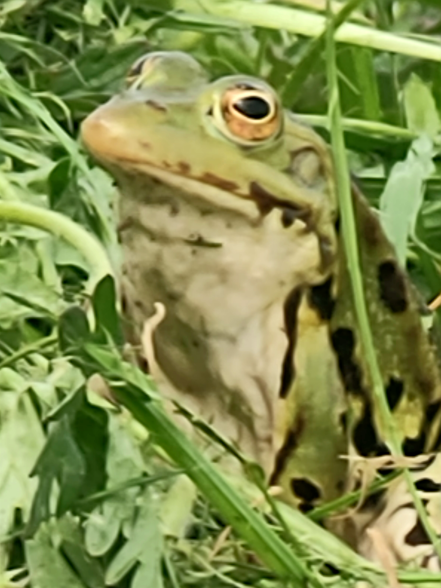
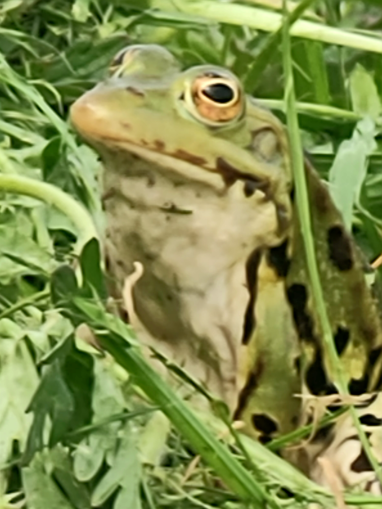

Nous sommes situés au sud du département du Rhône, près de Lyon, plus précisément dans les monts du Lyonnais. Nous produisons nos plantes hélophytes sur notre exploitation d'une surface d'environ 1,5 ha ,qui est à une altitude d'environ 800 mètres. L'équipe se compose de 2 personnes à temps plein et de l'intervention de stagiaires en saison. Les plantes sont produites en partie dans des bassins en serre tunnel et dans des bassins extérieurs. Les techniques privilégiées de production sont le semis quand cela est possible ainsi que le bouturage. Le prélèvement et la récolte des graines sont effectués et encadrés par nos soins. Pour les plantes endémiques et spécifiques, nous avons un réseau français de confrères que nous sollicitons. En effet, parfois, les plantes demandées sont tellement spécifiques qu'elles ne sont pas mises en culture systématiquement. Quand nous sommes prévenus à l'avance (2 à 3 mois), nous pouvons récolter et mettre en culture les variétés recherchées. Nous arrivons actuellement à produire 80% des variétés demandées, et pour les 20% restants, nous gardons des spécimens en culture pieds mère afin de nous constituer une bibliothèque de plantes. Notre type de clientèle se compose essentiellement de professionnels, environ 70%, et de particuliers en vente directe, environ 30%. Nous sommes présents sur quelques foires et salons locaux. Concernant la clientèle professionnelle, elle se compose de paysagistes et de collectivités (ville de Riorges, Roanne, Saint-Galmier...) ainsi que de syndicats de rivière (S.I.C.A.L.A lien vers le site). Nous assurons généralement personnellement nos livraisons, ce qui garantit le transport qualitatif de nos végétaux. Côté certification, nous fournissons un passeport phytosanitaire à jour, et nous sommes en cours de certification en végétal local pour certaines variétés
 
